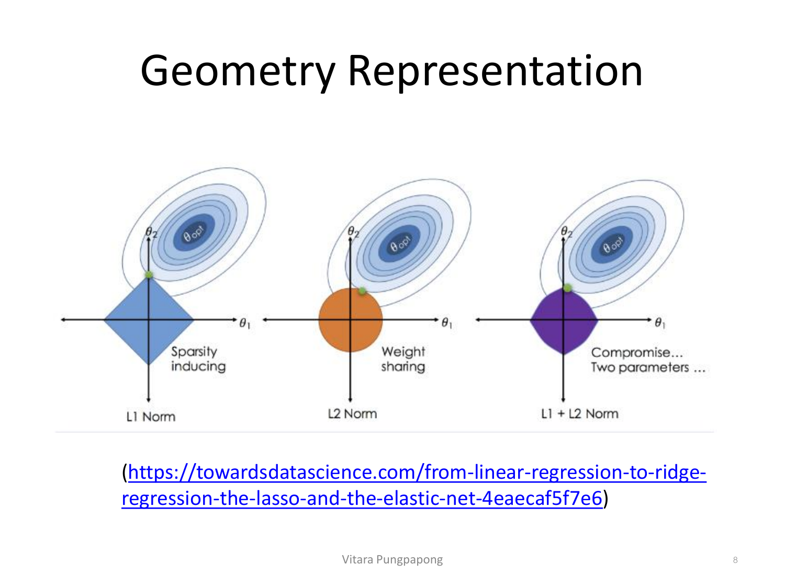
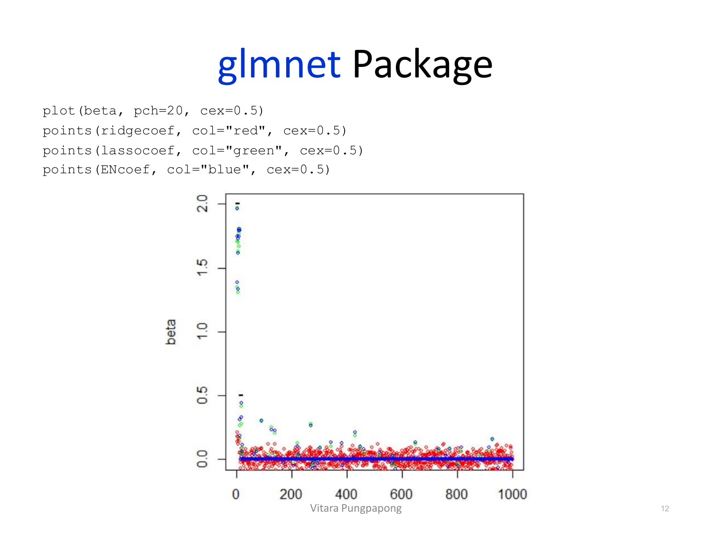

Lesson 7 / 14 · Penalized Regression
Reference: สูตร Ridge/LASSO + glmnet cheat sheet →
→ ฝึกกับโจทย์จริง: Ridge บน Lung Pressure Data (Assignment 4j)
Lecture 7 — Penalized Regression
Penalized Regression: Ridge, LASSO, Elastic Net และการอ่าน glmnet
← Lesson 6: Single Factor ANOVA
บทเรียนนี้เปลี่ยนโจทย์จาก "หา \(\hat{\beta}\) ที่ดีที่สุดแบบไม่เอนเอียง (unbiased)" แบบที่ผ่านมา มาเป็น "ยอมให้ \(\hat{\beta}\) เอนเอียง (biased) โดยตั้งใจ เพื่อแลกกับความแปรปรวนที่ต่ำลงและทำนายแม่นขึ้น" — นี่คือหัวใจของ penalized regression ทั้งตระกูล (Ridge, LASSO, Elastic Net) จุดที่ต้องระวังที่สุดในบทนี้ตามลำดับความสำคัญของข้อสอบ:
(1) เขียนสมการ penalty แต่ละแบบให้ถูก (2) เข้าใจว่าทำไม coefficient ที่ได้ตีความแบบเดียวกับ OLS ตรง ๆ ไม่ได้อีกต่อไป (เพราะมีทั้ง standardization และ shrinkage เข้ามาเกี่ยวข้อง)(3) อ่านโค้ด/ผลลัพธ์จาก glmnet ได้ทุกบรรทัด
1. ปัญหาของ OLS ที่ทำให้ต้องมี Penalized Regression
สไลด์เริ่มด้วยการเขียน OLS estimate ใหม่ในรูปแบบ optimization โดยตั้งสมมติฐานว่า X ถูก standardize (mean 0, variance 1 ทุกตัวแปร) และ Y ถูก center (mean 0) มาก่อนแล้ว — สังเกตว่าสมการนี้ไม่มีพจน์ intercept \(\beta_{0}\) แยกต่างหากอีกต่อไป เพราะ Y ที่ center แล้วมีค่าเฉลี่ยเป็น 0 พอดี:
\[\hat{\beta} = \underset{\beta}{\arg\min} \sum_{i=1}^{n} (Y_i - X_i\beta)^2\]
สไลด์ระบุปัญหาของ OLS ไว้ 4 ข้อ:
(1) Prediction accuracy — OLS estimate มักมี bias ต่ำแต่ variance สูงมาก ซึ่งทำให้ทำนายไม่แม่น(2) Interpretability — เมื่อ p (จำนวนตัวแปรอิสระ) เยอะ โมเดลที่ใส่ทุกตัวแปรตีความยาก(3) Multicollinearity — ตัวแปรอิสระสัมพันธ์กันเองสูง ทำให้ \(\hat{\beta}\) ไม่เสถียร(4) Cannot work with high-dimensional data — เมื่อ p มากกว่า n (จำนวนตัวอย่าง) เมทริกซ์ X'X ไม่ invertible เลย OLS หาคำตอบไม่ได้เลย ไม่ใช่แค่แม่นน้อยลง
ปัญหาข้อ (1) และ (4) นี้คือที่มาของแนวคิด bias-variance tradeoff ที่ใช้ทั้งบทนี้: OLS ไม่เอนเอียงเลย (unbiased) แต่แลกมาด้วย variance สูง — penalized regression ยอมให้ \(\hat{\beta}\) เอนเอียงเล็กน้อยโดยตั้งใจ (ผ่านการ "หด" ค่าเข้าหาศูนย์) เพื่อลด variance ลงมากกว่าที่ bias เพิ่มขึ้น ผลรวม (mean squared error = \(\text{bias}^2 + \text{variance}\)) จึงต่ำลงและทำนายแม่นขึ้น.
ปัญหาข้อ (4) ชัดเจนที่สุดในข้อมูลชีวการแพทย์ (biomedical data) ที่สไลด์ยกตัวอย่าง:
Slide: Biomedical Data — GeneChip และ SNP บน DNA (Lecture 7, p.3)
ตัวเลขที่สไลด์ให้ไว้:
ชิปตรวจยีนตัวเดียว (GeneChip) วัดได้พร้อมกัน ~20,000 ยีน
จีโนมมนุษย์มี SNP (จุดที่นิวคลีโอไทด์ต่างกันระหว่างคน) กระจายอยู่ใน ~4-5 ล้านตำแหน่ง
ถ้าตั้งโจทย์ regression ที่ตัวแปรอิสระ X คือยีนหรือ SNP เหล่านี้ทั้งหมด (p = 20,000 ถึงหลักล้าน) แต่จำนวนคนไข้ที่เก็บตัวอย่างได้จริง (n) มักอยู่แค่หลักร้อยถึงหลักพัน จะได้ \(p \gg n\) ทันที — นี่คือสถานการณ์ classic ที่ OLS ใช้ไม่ได้เลยตามปัญหาข้อ (4) และเป็นเหตุผลที่งานวิจัยด้านชีวสถิติ/genomics ผลักดันการพัฒนา penalized regression ขึ้นมาอย่างจริงจัง.
คำถาม 1 ปัญหาของ OLS
ทำไม OLS มักมี "bias ต่ำแต่ variance สูง" และ penalized regression แก้ปัญหานี้ด้วยหลักการอะไร?
OLS ไม่มีปัญหาเรื่อง variance เลย ปัญหามีแค่เรื่อง bias เพียงอย่างเดียว
OLS ไม่เอนเอียงแต่แกว่งง่ายเมื่อ p มากหรือตัวแปรสัมพันธ์กันเอง (multicollinearity) — penalized regression ยอมให้ \(\hat{\beta}\) เอนเอียงเล็กน้อย (shrink เข้าหา 0) เพื่อแลกกับ variance ที่ลดลงมากกว่า ทำให้ MSE โดยรวมต่ำลง
Bias และ variance ไม่มีความสัมพันธ์กัน การลด variance ไม่มีทางทำให้ bias เปลี่ยนแปลง
Penalized regression แก้ปัญหาโดยเพิ่มจำนวนตัวแปรอิสระเข้าไปในโมเดลให้มากขึ้น
คำถาม 2 (Free response) \(p \gg n\)
จากตัวอย่าง biomedical data (~20,000 ยีน หรือ ~4-5 ล้าน SNP เป็นตัวแปรอิสระ แต่จำนวนคนไข้จริงมักหลักร้อย) อธิบายว่าทำไม OLS แก้สมการหา \(\hat{\beta}\) ไม่ได้เลยในสถานการณ์นี้ ไม่ใช่แค่ "แม่นน้อยลง"
เฉลย
OLS ต้องหาอินเวอร์สของเมทริกซ์ X'X เพื่อคำนวณ \(\hat{\beta}\) แต่เมื่อ p (จำนวนตัวแปร) มากกว่า n (จำนวนตัวอย่าง) เมทริกซ์ X'X จะมี rank ไม่เต็ม (singular) จึงไม่มีอินเวอร์ส — สมการ normal equation ไม่มีคำตอบเดียวที่นิยามได้ ไม่ใช่แค่ประมาณค่าได้แย่ลงเรื่อย ๆ แบบต่อเนื่อง แต่ "หาคำตอบไม่ได้เลย" ตั้งแต่ต้น ซึ่งเป็นปัญหาข้อ (4) ที่สไลด์ระบุไว้ตรง ๆ
2. สมการทั่วไปของ Penalized Regression
แนวคิดหลัก: เอาโจทย์ OLS เดิม (ลดผลรวมกำลังสองของ residual) แล้วบวกพจน์ลงโทษ (penalty term) เข้าไปในฟังก์ชันที่ต้อง minimize:
\[\hat{\beta} = \underset{\beta}{\arg\min} \sum_{i=1}^{n} (Y_i - X_i\beta)^2 + P_\lambda(\beta)\]penalty term และ \(\lambda\) คือ tuning parameter
สังเกตโครงสร้าง: ยิ่ง \(\beta\) มีขนาดใหญ่ (ตัวแปรมีอิทธิพลมาก) พจน์ \(P_\lambda(\beta)\) ยิ่งลงโทษ (เพิ่มค่าฟังก์ชันที่ต้อง minimize) มากขึ้น ทำให้ optimizer เลือก \(\beta\) ที่มีขนาดเล็กลง ("หด" เข้าหาศูนย์) เพื่อแลกกับการลด residual sum of squares ลงได้มากกว่าเดิม ส่วน \(\lambda\) ควบคุม "ความแรง" ของการหดนี้:
\(\lambda = 0\) จะได้ \(\hat{\beta}\) เดียวกับ OLS ทุกประการ (ไม่มีการลงโทษเลย)
\(\lambda \to \infty\) จะบีบทุกสัมประสิทธิ์เข้าใกล้ศูนย์จนแทบไม่เหลือผลของตัวแปรอิสระใด ๆ
การเลือก \(\lambda\) ที่เหมาะสม (ไม่มาก ไม่น้อยเกินไป) คือหัวใจของการใช้งานจริง ซึ่งทำผ่าน cross-validation (หัวข้อ 6).
3. Ridge Regression (\(\ell_2\)-norm)
Ridge ใช้ผลรวมกำลังสองของสัมประสิทธิ์เป็น penalty (เรียกว่า \(\ell_2\)-norm):
เขียนแบบ constrained: \(\hat{\beta} = \underset{\beta}{\arg\min} \sum_{i=1}^{n}(Y_i-X_i\beta)^2\) subject to \(\sum_{j=1}^{p} \beta_j^2 \leq t\)
สองรูปแบบนี้เทียบเท่ากัน (มี \(\lambda\) คู่กับ t เสมอคู่หนึ่ง):
รูป constrained บอกตรง ๆ ว่า "ห้ามให้ผลรวมกำลังสองของสัมประสิทธิ์เกิน t"รูป penalized คือการแปลง constraint นั้นเป็นพจน์ลงโทษที่บวกเข้าไปใน objective function โดยตรง
ทั้งสองแบบให้คำตอบ \(\hat{\beta}\) เดียวกันเมื่อ \(\lambda\) กับ t สัมพันธ์กันถูกต้อง.
4. Least Absolute Shrinkage and Selection Operator (LASSO)
LASSO คิดค้นโดย Tibshirani (1996) ใช้ผลรวมค่าสัมบูรณ์ของสัมประสิทธิ์เป็น penalty (\(\ell_1\)-norm) แทนกำลังสอง:
Constrained: \(\hat{\beta} = \underset{\beta}{\arg\min} \sum_{i=1}^{n}(Y_i-X_i\beta)^2\) subject to \(\sum_{j=1}^{p} |\beta_j| \leq t\)
ต่างจาก Ridge แค่ตรงที่ยกกำลังสอง (Ridge) เทียบกับค่าสัมบูรณ์ (LASSO) — แต่ความต่างเล็กน้อยนี้ส่งผลใหญ่มากต่อพฤติกรรมของคำตอบ: LASSO สามารถบีบสัมประสิทธิ์บางตัวให้เป็น ศูนย์เป๊ะ ได้ (ไม่ใช่แค่ใกล้ศูนย์) ในขณะที่ Ridge ทำไม่ได้ — รายละเอียดเชิงเรขาคณิตว่าทำไมถึงต่างกันอยู่ในหัวข้อ 5.
5. Elastic Net (EN) และรูปทรงเรขาคณิตของ Penalty
Elastic Net เสนอโดย Zou และ Hastie (2005) ผสมทั้ง \(\ell_1\)-norm และ \(\ell_2\)-norm เข้าด้วยกัน:
\[\hat{\beta} = \underset{\beta}{\arg\min} \sum_{i=1}^{n}(Y_i-X_i\beta)^2 + \lambda_1\sum_{j=1}^{p}|\beta_j| + \lambda_2\sum_{j=1}^{p}\beta_j^2\]
ถ้ากำหนด \(\alpha = \lambda_2/(\lambda_1+\lambda_2)\) จัดรูปใหม่เป็น constrained form ได้:
\(\hat{\beta} = \underset{\beta}{\arg\min} \sum_{i=1}^{n}(Y_i-X_i\beta)^2\) subject to \((1-\alpha)\sum_{j=1}^{p}|\beta_j| + \alpha\sum_{j=1}^{p}\beta_j^2 \leq t\)
ภาพต่อไปนี้เปรียบเทียบรูปทรงของ constraint region ทั้งสามแบบในปริภูมิสองมิติ (\(\theta_{1}\), \(\theta_{2}\)) — วงรีซ้อนกันคือ contour ของ RSS (residual sum of squares) จากจุด optimum ไร้ข้อจำกัด \(\theta_{opt}\) และจุดสีเขียวคือคำตอบ \(\hat{\beta}\) ที่ penalized regression หาได้จริง (จุดแรกที่ contour สัมผัส constraint region):

Slide: Geometry Representation — L1 vs L2 vs L1+L2 constraint region (Lecture 7, p.8)
อ่านรูปทรงแต่ละแบบ:
L1-norm (ซ้าย) เป็นสี่เหลี่ยมข้าวหลามตัด (diamond) ที่มีมุมแหลม วางอยู่บนแกน \(\theta_{1}\) และ \(\theta_{2}\) พอดี — เพราะ contour วงรีของ RSS ส่วนใหญ่ "สัมผัส" กับขอบ diamond ได้ง่ายที่สุดตรงมุมแหลมเหล่านั้น (ไม่ใช่ตรงกลางขอบเรียบ) จุดสัมผัสจึงมักตกที่มุม ซึ่งมุมของ diamond คือจุดที่อย่างน้อยหนึ่งพิกัดเท่ากับศูนย์เป๊ะ (เช่น มุมบนแกน \(\theta_{2}\) หมายถึง \(\theta_{1}\)=0 พอดี) — นี่คือกลไกที่ทำให้ LASSO ได้ exact zero และเรียกว่า "sparsity inducing" ตามป้ายกำกับในภาพL2-norm (กลาง) เป็นวงกลมเรียบ ไม่มีมุม จุดสัมผัสจึงกระจายไปตามขอบวงกลมได้ทุกทิศทางอย่างต่อเนื่อง แทบไม่มีทางตกที่แกนพอดี — สัมประสิทธิ์จึงถูก "หด" เข้าใกล้ศูนย์ได้ แต่แทบไม่มีทางเป็นศูนย์เป๊ะ ตรงกับป้ายกำกับ "weight sharing" (ทุกตัวแปรยังมีน้ำหนักเหลืออยู่บ้างเสมอ)L1+L2 (ขวา) เป็นรูปข้าวหลามตัดมุมมน (compromise ระหว่างสองแบบ) ให้ผลลัพธ์อยู่ระหว่างกลาง คือได้ทั้ง sparsity บางส่วนและ weight sharing บางส่วน
คำถาม 3 Ridge vs LASSO
โมเดลใดสามารถบีบสัมประสิทธิ์บางตัวให้เป็นศูนย์เป๊ะ (exact zero) ได้ ซึ่งทำหน้าที่เหมือนการคัดเลือกตัวแปร (variable selection) โดยอัตโนมัติ?
Ridge Regression เท่านั้น
ไม่มีวิธีใดใน 3 วิธี (Ridge, LASSO, EN) ทำได้ ต้องใช้ \(\ell_0\) เท่านั้น
LASSO (และ Elastic Net ในบางส่วน เพราะมีพจน์ \(\ell_1\) ผสมอยู่) เนื่องจาก constraint region เป็นรูปที่มีมุมแหลมอยู่บนแกน
ทั้ง Ridge และ LASSO ทำได้เหมือนกันทุกประการ เพราะทั้งคู่เป็น penalized regression
คำถาม 4 (Free response) เรขาคณิตของ Sparsity
อธิบายด้วยภาพเรขาคณิต (diamond vs circle) ว่าทำไม L1-norm constraint region ถึงมักให้คำตอบที่สัมประสิทธิ์บางตัวเป็นศูนย์เป๊ะ ในขณะที่ L2-norm แทบไม่เคยให้ผลแบบนั้น
เฉลย
คำตอบของ penalized regression คือจุดแรกที่ contour วงรีของ RSS (เริ่มขยายจากจุด optimum ไร้ข้อจำกัด) สัมผัสกับขอบเขต constraint region L1-norm มีรูปร่างเป็นสี่เหลี่ยมข้าวหลามตัด (diamond) ที่มีมุมแหลมวางอยู่บนแกนพอดี — เพราะมุมเป็นจุดที่ "ยื่นออกมา" มากที่สุด contour วงรีจึงมีโอกาสสัมผัสตรงมุมสูงกว่าตรงขอบเรียบมาก และมุมของ diamond คือจุดที่พิกัดหนึ่งเท่ากับศูนย์เป๊ะ ผลคือ LASSO มักได้สัมประสิทธิ์เป็นศูนย์เป๊ะ ส่วน L2-norm เป็นวงกลมไม่มีมุมเลย จุดสัมผัสกระจายไปรอบขอบวงกลมอย่างต่อเนื่องและสมมาตร แทบไม่มีทิศทางไหนพิเศษที่จะบังคับให้พิกัดใดพิกัดหนึ่งเป็นศูนย์พอดี จึงได้แค่การหดเข้าใกล้ศูนย์ ไม่ใช่ศูนย์เป๊ะ
6. glmnet Package — Reparameterization ด้วย \(\alpha\)
glmnet คือ R package หลักที่ใช้ fit Ridge, LASSO, และ Elastic Net ได้ทั้งหมด โดยเขียน penalty term ใหม่เป็นรูปแบบเดียว ควบคุมด้วยพารามิเตอร์ \(\alpha\) (ระหว่าง 0 ถึง 1) และ \(\lambda\):
\[P_\lambda(\beta) = \lambda\left[ \alpha \sum_{j=1}^{p}|\beta_j| + \dfrac{(1-\alpha)}{2} \sum_{j=1}^{p}\beta_j^2 \right]\]
สังเกตว่านี่คือการรวมสูตร Ridge (หัวข้อ 3) และ LASSO (หัวข้อ 4) ให้ควบคุมด้วย argument เดียว alpha ใน R แทนที่จะต้องเรียกฟังก์ชันคนละตัว — นี่คือเหตุผลที่โค้ดด้านล่างใช้แค่ cv.glmnet(..., alpha=0) สำหรับ Ridge และ alpha=1 สำหรับ LASSO โดยไม่ต้องเปลี่ยนฟังก์ชัน.
ตัวอย่างจำลองข้อมูล High-Dimensional (n=100, p=1000)
สไลด์สาธิตด้วยข้อมูลจำลอง ซึ่งเป็นตัวอย่างที่สำคัญมากเพราะรู้ค่า \(\beta\) จริง ล่วงหน้า (ในข้อมูลจริงไม่มีทางรู้) จึงใช้ตรวจสอบว่าแต่ละวิธี "เดา" \(\beta\) จริงได้แม่นแค่ไหน:
# Let's simulate a high-dimensional data set
n<-100
p<-1000
# generate X from Normal distribution
X<-matrix(rnorm(n*p, mean=0, sd=1), nrow=n)
# Pre-define beta
beta<-matrix(c(rep(2,10), rep(0.5, 10), rep(0, 980)), ncol=1)
# simulate Y
Y<-X%*%beta+matrix(rnorm(n,0,1), ncol=1)
library(glmnet)
# Ridge Regression
cvridge<-cv.glmnet(x=X, y=Y, alpha=0, type.measure="mse", nfolds=10)
cvridge
ridgemodel<-glmnet(x=X, y=Y, alpha=0, lambda=cvridge$lambda.min)
# Get regression coefficients
ridgecoef<-coef(ridgemodel)อ่านตัวเลขในโค้ด: n=100 ตัวอย่าง แต่ p=1000 ตัวแปรอิสระ — p มากกว่า n ถึง 10 เท่า ตรงกับสถานการณ์ high-dimensional ที่ OLS ใช้ไม่ได้ (หัวข้อ 1) พอดี ค่า \(\beta\) จริงที่กำหนดไว้คือ beta = c(rep(2,10), rep(0.5,10), rep(0,980)) แปลว่า:
ตัวแปรที่ 1-10 มีผลจริง \(\beta=2\) (ผลแรงสุด)ตัวแปรที่ 11-20 มีผลจริง \(\beta=0.5\) (ผลเบากว่า)ตัวแปรที่ 21-1000 (รวม 980 ตัว) ไม่มีผลจริงเลย (\(\beta=0\))
มีแค่ 20 ตัวแปรจาก 1000 ตัวที่ "จริง" ส่วนที่เหลือเป็น noise ล้วน ๆ ที่โมเดลควรตัดทิ้งให้ได้.
cv.glmnet(x=X, y=Y, alpha=0, nfolds=10) คือการทำ 10-fold cross-validation :
แบ่งข้อมูล 100 ตัวอย่างเป็น 10 ส่วน ลองค่า \(\lambda\) หลายค่า
สำหรับแต่ละ \(\lambda\) ใช้ 9 ส่วนเทรน 1 ส่วนทดสอบ วนครบ 10 รอบแล้วเฉลี่ย MSE (type.measure="mse")
\(\lambda\) ที่ให้ MSE เฉลี่ยต่ำสุดจะถูกเก็บไว้ที่ cvridge$lambda.min
นำไป fit โมเดลจริงอีกครั้งด้วย glmnet(..., lambda=cvridge$lambda.min) เพื่อดึงสัมประสิทธิ์สุดท้ายด้วย coef()
ทำซ้ำแบบเดียวกันสำหรับ LASSO (เปลี่ยนแค่ alpha=1) และ Elastic Net (วนลูปหา alpha ที่ให้ MSE ต่ำสุดในช่วง 0.01 ถึง 0.99):
# LASSO
cvlasso<-cv.glmnet(x=X, y=Y, alpha=1, type.measure="mse", nfolds=10)
cvlasso
lassomodel<-glmnet(x=X, y=Y, alpha=1, lambda=cvlasso$lambda.min)
lassocoef<-coef(lassomodel)
# EN
alpha<-seq(0.01,0.99,0.01)
lambda<-rep(0, length(alpha))
mse<-rep(0, length(alpha))
for (i in 1:length(alpha))
{
cv<-cv.glmnet(x=X, y=Y, alpha=alpha[i])
lambda[i]<-cv$lambda.min
mse[i]<-cv$cvm[which.min(cv$cvm)]
}
ENcv<-data.frame(alpha=alpha, lambda=lambda, mse=mse)
ENcv[which.min(ENcv$mse), ]
ENmodel<-glmnet(x=X, y=Y, alpha=ENcv$alpha[which.min(ENcv$mse)],
lambda=ENcv$lambda[which.min(ENcv$mse)])
ENcoef<-coef(ENmodel)สังเกตลูปของ EN:
ไล่ทดสอบ alpha ทีละ 0.01 ตั้งแต่ 0.01 ถึง 0.99 (99 ค่า)
แต่ละค่าทำ cross-validation หา lambda.min ของตัวเองก่อน แล้วบันทึก MSE ที่ต่ำสุดของ alpha ค่านั้นไว้
สุดท้ายเลือกทั้งคู่ (alpha, lambda) ที่ให้ MSE ต่ำสุดในภาพรวม
นี่คือการทำ grid search สองมิติ (\(\alpha\) และ \(\lambda\) พร้อมกัน) ซึ่งเป็นเหตุผลว่าทำไม Elastic Net ใช้เวลาคำนวณนานกว่า Ridge/LASSO เดี่ยว ๆ มาก (ต้องรัน cross-validation ซ้ำ 99 รอบ).
ผลลัพธ์: เปรียบเทียบ \(\hat{\beta}\) ทั้งสามวิธีกับ \(\beta\) จริง
ขั้นสุดท้ายพล็อตค่า \(\beta\) จริง (จุดดำ) เทียบกับ \(\hat{\beta}\) ที่แต่ละวิธีประมาณได้ (สีต่างกัน) บนแกน X คือลำดับตัวแปรที่ 1 ถึง 1000:
plot(beta, pch=20, cex=0.5)
points(ridgecoef, col="red", cex=0.5)
points(lassocoef, col="green", cex=0.5)
points(ENcoef, col="blue", cex=0.5)

Slide: glmnet Package — ผลจริงจาก R เปรียบเทียบ Ridge/LASSO/EN (Lecture 7, p.12)
อ่านตัวเลขในภาพ:
ตำแหน่ง 1-10 (\(\beta\) จริง = 2): จุดสีทุกสีตกอยู่ที่ประมาณ 1.3-2.0 คือต่ำกว่า 2 เสมอ — นี่คือ shrinkage ที่ทุกวิธีเหมือนกัน: \(\hat{\beta}\) ถูกหดลงจากค่าจริงเสมอเพราะมี penalty term ถ่วงอยู่ ไม่ใช่แค่ noise สุ่ม ๆตำแหน่ง 11-20 (\(\beta\) จริง = 0.5): จุดตกประมาณ 0.2-0.45 ก็ถูกหดลงเช่นกันแต่สัดส่วนน้อยกว่าตำแหน่ง 21-1000 (\(\beta\) จริง = 0 ทั้งหมด 980 ตัว) — จุดที่สำคัญที่สุด: จุดสีแดง (Ridge) กระจายเกาะแถบแคบ ๆ รอบศูนย์อย่างเห็นได้ชัด ไม่เคยนิ่งที่ 0 เป๊ะเลยสักตัว ตรงกับที่หัวข้อ 5 อธิบายไว้ว่า L2-norm ไม่มีมุม จึงไม่มีทางบีบให้เป็นศูนย์เป๊ะ ส่วนจุดสีเขียว (LASSO) และสีน้ำเงิน (EN) ส่วนใหญ่ทับอยู่ที่เส้น 0 พอดี เพราะมีพจน์ \(\ell_1\) อยู่ในทั้งคู่
ภาพนี้จึงยืนยันด้วยตัวเลขจริงว่า LASSO/EN "คัดตัวแปร" ได้จริงในขณะที่ Ridge เก็บทุกตัวแปรไว้เสมอ (แค่บีบให้เล็กลง).
ทักษะที่ออกสอบหนัก: ทำไมตีความ \(\hat{\beta}\) จาก glmnet แบบเดียวกับ OLS ตรง ๆ ไม่ได้
ใน Lesson 1 การแปลผล \(\hat{\beta}_{1}\) จาก lm() ทำได้ตรงไปตรงมา: "เมื่อ X เพิ่มขึ้น 1 หน่วย Y คาดว่าจะเปลี่ยนไปเฉลี่ย \(\hat{\beta}_{1}\) หน่วย" เพราะ OLS เป็น unbiased estimator บนหน่วยดั้งเดิมของ X และ Y แต่กับ Ridge/LASSO/EN มี 2 เหตุผลที่ทำให้ทำแบบเดิมตรง ๆ ไม่ได้:
(1) Standardization: สูตร OLS estimate ที่เปิดบทเรียนนี้ (หัวข้อ 1) ระบุไว้ตรง ๆ ว่า "assume standardization in X's and centering in Y" — สัมประสิทธิ์ที่ได้จึงอยู่ในหน่วย "ต่อ 1 ส่วนเบี่ยงเบนมาตรฐาน (1 SD) ของ X ที่ standardize แล้ว" ไม่ใช่ "ต่อ 1 หน่วยดั้งเดิมของ X" อีกต่อไป จะเทียบกับหน่วยจริงต้องแปลงกลับก่อน (หารด้วย SD ของ X ตัวนั้น)(2) Shrinkage คือ bias ที่ตั้งใจใส่เข้าไป: จากภาพในหัวข้อนี้เห็นชัดว่า \(\hat{\beta}\) ทุกตัวถูกหดต่ำกว่าค่าจริงเสมอ (2 → ~1.3-2.0, 0.5 → ~0.2-0.45) นี่ไม่ใช่ "ค่าประมาณที่ดีที่สุดแบบไม่เอนเอียง" เหมือน OLS แต่เป็นค่าที่ถูกดึงเข้าหาศูนย์โดยเจตนาเพื่อลด variance — จะพูดว่า "\(\hat{\beta}=1.8\) แปลว่าผลจริงของตัวแปรนี้คือ 1.8" จึงไม่ถูกต้อง เพราะรู้อยู่แล้วว่ามันต่ำกว่าค่าจริงอย่างเป็นระบบ (systematic underestimate)(3) สัมประสิทธิ์ = 0 จาก LASSO ไม่ได้แปลว่า "พิสูจน์แล้วว่าไม่มีผลจริง": เป็นแค่ผลของการตัดสินใจที่ \(\lambda\) ค่าหนึ่ง (ขึ้นกับ cross-validation) — เปลี่ยน \(\lambda\) หรือเปลี่ยนชุดข้อมูล ตัวแปรตัวเดียวกันอาจไม่เป็นศูนย์ก็ได้ ต่างจาก hypothesis test แบบ Lesson 1 ที่ให้ p-value ยืนยันนัยสำคัญทางสถิติอย่างเป็นทางการ — coef(glmnet_model) ไม่มีคอลัมน์ p-value ให้เหมือน summary(lm(...)) เลย
คำถาม 5 glmnet alpha
ต้องการ fit LASSO ด้วย glmnet โดยใช้ 10-fold cross-validation หา \(\lambda\) ที่เหมาะสม ควรเขียนโค้ดส่วนใด?
cv.glmnet(x=X, y=Y, alpha=1, nfolds=10)lm(Y~X, nfolds=10)cv.glmnet(x=X, y=Y, alpha=0, nfolds=10)cv.glmnet(x=X, y=Y, alpha=0.5, nfolds=10)
คำถาม 6 (Free response) อ่านผลจากภาพเปรียบเทียบ
จากภาพเปรียบเทียบ \(\beta\) จริงกับ \(\hat{\beta}\) ของ Ridge/LASSO/EN (n=100, p=1000, \(\beta\) จริงมี 20 ตัวไม่เป็นศูนย์จาก 1000 ตัว) อธิบายว่าทำไมจุดสีแดง (Ridge) ที่ตำแหน่ง 21-1000 กระจายอยู่รอบศูนย์แต่ไม่เคยเท่ากับศูนย์เป๊ะ ในขณะที่จุดสีเขียว (LASSO) ส่วนใหญ่ทับที่ 0 พอดี
เฉลย
เพราะ Ridge ใช้ penalty แบบ \(\ell_2\)-norm ซึ่งมี constraint region เป็นวงกลม (ไม่มีมุม) คำตอบจึงสัมผัสขอบเขตที่จุดใดก็ได้บนเส้นโค้งเรียบ แทบไม่มีทางตกที่แกนพอดี ได้แค่ "หด" สัมประสิทธิ์ของตัวแปรที่ไม่มีผลจริงให้เล็กลงมาก แต่ไม่เท่ากับศูนย์เป๊ะ ส่วน LASSO ใช้ \(\ell_1\)-norm ซึ่งมี constraint region เป็นข้าวหลามตัดที่มีมุมแหลมอยู่บนแกน คำตอบมักตกที่มุมเหล่านั้น ซึ่งหมายถึงสัมประสิทธิ์บางตัวเท่ากับศูนย์เป๊ะ — สำหรับตัวแปรที่ 21-1000 ที่ไม่มีผลจริงเลย LASSO จึงมักตัดทิ้งให้เป็น 0 ตรง ๆ ในขณะที่ Ridge เก็บไว้เป็นค่าเล็ก ๆ ที่ไม่เท่ากับศูนย์เสมอ
คำถาม 7 Interpretation
ข้อใดอธิบายถูกต้องที่สุดว่าทำไมตีความ \(\hat{\beta}\) จาก Ridge/LASSO เหมือนตีความ \(\hat{\beta}\) จาก lm() ตรง ๆ ไม่ได้?
เพราะ glmnet คำนวณผิดพลาดบ่อยกว่า lm() ในทางเทคนิค
เพราะ \(\hat{\beta}\) อยู่บนสเกลของ X ที่ standardize แล้ว (ไม่ใช่หน่วยดั้งเดิม) และถูกหด (shrink) เข้าหาศูนย์โดยตั้งใจ (biased) เพื่อลด variance — ไม่ใช่ unbiased estimate บนหน่วยจริงแบบ OLS
ไม่มีความต่างใด ๆ เลย ตีความเหมือน OLS ได้ทุกประการ
เพราะ Ridge/LASSO ใช้ได้กับข้อมูล categorical เท่านั้น ตีความแบบตัวเลขต่อเนื่องไม่ได้
คำถาม 8 (Free response — รูปแบบข้อสอบจริง) แปลผล Exact Zero
ผลจาก coef(lassomodel) พบว่าตัวแปร \(X_{50}\) มีสัมประสิทธิ์เท่ากับ 0 เป๊ะ นักเรียนคนหนึ่งสรุปว่า "พิสูจน์แล้วว่า \(X_{50}\) ไม่มีผลต่อ Y เลยในความเป็นจริง" คำตอบนี้ถูกต้องหรือไม่ เพราะอะไร
เฉลย
ไม่ถูกต้องทั้งหมด — สัมประสิทธิ์เป็นศูนย์จาก LASSO หมายความแค่ว่า "ที่ค่า \(\lambda\) ซึ่งเลือกโดย cross-validation รอบนี้ ตัวแปร \(X_{50}\) ถูกตัดออกจากโมเดล" เท่านั้น ไม่ใช่บทสรุปเชิงสถิติที่ยืนยันด้วย p-value เหมือน hypothesis test แบบ OLS — ถ้าเปลี่ยน \(\lambda\) หรือเปลี่ยนชุดข้อมูลตัวอย่าง ผลอาจไม่เป็นศูนย์อีกก็ได้ นอกจากนี้ coef() จาก glmnet ไม่มีคอลัมน์ p-value ให้ตรวจสอบนัยสำคัญทางสถิติแบบเป็นทางการเหมือน summary(lm(...)) เลย จึงสรุปแบบเด็ดขาดว่า "ไม่มีผลจริง" ไม่ได้
7. เมื่อไรควรเลือกอะไร: Ridge vs LASSO vs Elastic Net
สรุปจากสมการและพฤติกรรมที่แสดงในหัวข้อ 3-6:
Ridge เหมาะเมื่อเชื่อว่าตัวแปรอิสระทุกตัว มีผลจริงอยู่บ้าง (แค่มากน้อยต่างกัน) และปัญหาหลักคือ multicollinearity — Ridge เก็บทุกตัวแปรไว้ (ไม่มีการคัดออก) แค่หดขนาดลงLASSO เหมาะเมื่อเชื่อว่ามีแค่บางตัวแปรที่มีผลจริง (sparse) ต้องการคัดตัวแปรออกไปด้วยในตัวElastic Net เป็นทางเลือกเมื่อมีตัวแปรที่สัมพันธ์กันเองสูงเป็นกลุ่ม (correlated groups) เพราะ LASSO เดี่ยว ๆ มักเลือกมาแค่ตัวเดียวจากกลุ่มที่สัมพันธ์กันแบบสุ่ม ๆ (ไม่เสถียร) ในขณะที่ Elastic Net (ผสม \(\ell_2\) เข้ามาด้วย) มีแนวโน้มเลือกทั้งกลุ่มพร้อมกัน ("grouping effect") ทำให้เสถียรกว่า
คำถาม 9 เลือกวิธีให้เหมาะกับโจทย์
นักวิจัยมีตัวแปรอิสระ 500 ตัว เชื่อว่ามีแค่ประมาณ 15 ตัวที่มีผลจริงต่อ Y ส่วนที่เหลือเป็น noise ล้วน ๆ และต้องการรายชื่อตัวแปรที่ "สำคัญจริง" ออกมาเป็นผลลัพธ์ ควรเลือกวิธีใด?
OLS ธรรมดา เพราะให้ค่า unbiased ที่แม่นยำที่สุดเสมอ
ไม่มีวิธีใดใน 3 วิธีนี้ทำงานนี้ได้ ต้องเลือกตัวแปรด้วยมือเท่านั้น
LASSO (หรือ Elastic Net ถ้าตัวแปรที่สำคัญสัมพันธ์กันเป็นกลุ่ม) เพราะสามารถบีบสัมประสิทธิ์ของตัวแปรที่ไม่มีผลจริงให้เป็นศูนย์เป๊ะ ได้ผลลัพธ์เป็นรายชื่อตัวแปรที่ถูกคัดออกมาโดยตรง
Ridge Regression เพราะเก็บทุกตัวแปรไว้ครบ ปลอดภัยที่สุด
8. Best Subset Selection: \(\ell_0\)-norm และปัญหาการคำนวณที่ยากขึ้น
อีกทางเลือกหนึ่งคือลงโทษด้วยจำนวนสัมประสิทธิ์ที่ไม่เป็นศูนย์โดยตรง (\(\ell_0\)-norm) แทนที่จะลงโทษด้วยขนาดของสัมประสิทธิ์แบบ \(\ell_1\)/\(\ell_2\):
\(\hat{\beta} = \underset{\beta}{\arg\min} \sum_{i=1}^{n}(Y_i-X_i\beta)^2 + \lambda\lVert \beta \rVert_0\), โดย \(\lVert \beta \rVert_0\) = จำนวนพารามิเตอร์ที่ไม่เป็นศูนย์
แนวคิดนี้ตรงไปตรงมาที่สุด (ลงโทษ "จำนวนตัวแปรที่ใช้" ตรง ๆ) แต่สไลด์เรียกหัวข้อนี้ว่า "More Hard Optimization Problem" เพราะ \(\ell_0\)-norm ทำให้โจทย์เป็น combinatorial optimization (ต้องลองทุกชุดย่อยของตัวแปรที่เป็นไปได้ ซึ่งเพิ่มแบบ exponential ตาม p) ไม่ใช่ปัญหา convex เรียบ ๆ แบบ Ridge/LASSO ที่แก้ได้เร็วด้วย gradient-based method — งานของ Hazimeh และ Mazumder (2020) ที่สไลด์อ้างถึงคือความพยายามหาอัลกอริทึมที่เร็วพอสำหรับปัญหานี้ (coordinate descent + local combinatorial search) แทนที่จะลองทุกชุดย่อยตรง ๆ ซึ่งทำไม่ไหวเมื่อ p ใหญ่.
R package L0Learn รองรับ penalty 3 แบบ:
L0: \(P_\lambda(\beta) = \lambda\lVert \beta \rVert_0\)
สังเกตรูปแบบ: L0L1 และ L0L2 คือการผสม \(\ell_0\) เข้ากับ \(\ell_1\) หรือ \(\ell_2\) อีกที (มี tuning parameter สองตัวคือ \(\lambda\) และ \(\gamma\)) แนวคิดคล้ายกับ Elastic Net ในหัวข้อ 5 ที่ผสมสอง norm เข้าด้วยกัน แต่คราวนี้ใช้ \(\ell_0\) เป็นตัวหลักแทน \(\ell_1\). ตัวอย่างการเรียกใช้ใน R:
library(L0Learn)
# L0
cvfit = L0Learn.cvfit(x=X, y=Y, nFolds=10, seed=1, penalty="L0", maxSuppSize=50)
print(cvfit)
plot(cvfit)
L0fit<-L0Learn.fit(x=X, y=Y, maxSuppSize=21)
L0fit_coef<-coef(L0fit, lambda=print(L0fit)$lambda[length(print(L0fit)$lambda)])
# L0L1
cvfit = L0Learn.cvfit(X, y=Y, nFolds=10, seed=1, penalty="L0L1", nGamma=10,
gammaMin=0.0001, gammaMax=0.1, maxSuppSize=50)
# L0L2
cvfit = L0Learn.cvfit(X, y=Y, nFolds=10, seed=1, penalty="L0L2", nGamma=10,
gammaMin=0.0001, gammaMax=0.1, maxSuppSize=50)สังเกต argument maxSuppSize ที่ปรากฏซ้ำทุกครั้ง (=50 ในตัวอย่าง cross-validation, =21 ในตัวอย่าง fit) — นี่คือการจำกัดจำนวนตัวแปรสูงสุดที่ยอมให้ไม่เป็นศูนย์พร้อมกัน (support size) ซึ่งจำเป็นเพื่อควบคุมไม่ให้ combinatorial search ใหญ่เกินจะคำนวณไหว ตรงกับปัญหา "hard optimization" ที่กล่าวไว้ข้างต้นพอดี — ยิ่ง maxSuppSize ใหญ่ ยิ่งคำนวณช้าลงมาก.
คำถาม 10 \(\ell_0\)-norm
ทำไมการใช้ \(\ell_0\)-norm เป็น penalty term (นับจำนวนสัมประสิทธิ์ที่ไม่เป็นศูนย์ตรง ๆ) ถึงเป็นปัญหาการคำนวณที่ยากกว่า Ridge หรือ LASSO มาก?
เพราะการนับจำนวนสัมประสิทธิ์ที่ไม่เป็นศูนย์ทำให้โจทย์กลายเป็น combinatorial optimization ที่ต้องพิจารณาชุดย่อยของตัวแปรที่เป็นไปได้ ซึ่งเพิ่มแบบ exponential ตาม p ต่างจาก \(\ell_1\)/\(\ell_2\) ที่เป็นปัญหา convex เรียบและแก้เร็วได้
เพราะ R ยังไม่มี package รองรับ \(\ell_0\)-norm เลย ต้องเขียนโค้ดเองทั้งหมด
ในความเป็นจริง \(\ell_0\)-norm คำนวณง่ายกว่า Ridge และ LASSO เสมอ
เพราะ \(\ell_0\)-norm ต้องใช้หน่วยความจำคอมพิวเตอร์มากกว่า \(\ell_1\)/\(\ell_2\) หลายเท่าเสมอ
คำถาม 11 (Free response) สรุปรวม Ridge/LASSO/EN/L0
เรียงลำดับ Ridge, LASSO, Elastic Net, และ L0 penalty ตาม "ความสามารถในการคัดตัวแปรออก (variable selection)" จากน้อยไปมาก พร้อมอธิบายเหตุผลสั้น ๆ ของแต่ละตัว
เฉลย
Ridge (ไม่คัดตัวแปรเลย เพราะ \(\ell_2\)-norm เป็นวงกลมไม่มีมุม ได้แค่หดค่าเข้าใกล้ 0) → Elastic Net (คัดได้บางส่วน เพราะมีพจน์ \(\ell_1\) ผสมอยู่ แต่ถูกถ่วงด้วยพจน์ \(\ell_2\) ที่ดึงตัวแปรกลุ่มที่สัมพันธ์กันไว้ด้วยกัน) → LASSO (คัดได้ตรงไปตรงมาที่สุดในกลุ่ม convex penalty เพราะ \(\ell_1\)-norm มีมุมแหลมอยู่บนแกนพอดี) → L0 (คัดตัวแปรได้ตรงที่สุดตามนิยาม เพราะลงโทษ "จำนวนตัวแปรที่ไม่เป็นศูนย์" โดยตรง ไม่ใช่ผลข้างเคียงจากรูปทรงเรขาคณิตแบบ LASSO แต่แลกมาด้วยการคำนวณที่ยากกว่ามากเพราะเป็น combinatorial optimization)
คำถาม 12 bias-variance tradeoff โดยรวม
ข้อใดสรุป bias-variance tradeoff ของ penalized regression ได้ถูกต้องที่สุด?
Bias-variance tradeoff ใช้ได้กับ OLS เท่านั้น ไม่เกี่ยวกับ penalized regression
Penalized regression ทำให้ทั้ง bias และ variance ลดลงพร้อมกันเสมอ ไม่มีการแลกเปลี่ยนใด ๆ
\(\lambda\) ยิ่งมากยิ่งทำให้ bias ลดลงและ variance เพิ่มขึ้นเสมอ
Penalized regression ยอมรับ bias ที่เพิ่มขึ้น (เพราะ \(\hat{\beta}\) ถูกหดออกจากค่า unbiased ของ OLS) เพื่อแลกกับ variance ที่ลดลงมากกว่า ทำให้ MSE โดยรวม (\(\text{bias}^2+\text{variance}\)) ต่ำลงและทำนายแม่นขึ้น โดยเฉพาะเมื่อ p ใหญ่หรือมี multicollinearity
ชัยชนะของบทเรียนนี้
ตอนนี้คุณควรเขียนสมการ penalty ทั้ง 4 แบบได้จากความจำ (Ridge \(\ell_2\), LASSO \(\ell_1\), Elastic Net ผสมทั้งคู่, L0 นับจำนวนตัวแปร), อธิบาย reparameterization ของ
glmnet ด้วย
alpha ได้, อ่านโค้ด
cv.glmnet()/
glmnet()/
coef() พร้อมเชื่อมกับตัวเลขจริงในตัวอย่างจำลอง (\(\beta\) จริง 20 ตัวจาก 1000), และที่สำคัญที่สุดคือ
อธิบายได้ว่าทำไม \(\hat{\beta}\) จาก Ridge/LASSO/EN ตีความแบบเดียวกับ OLS ตรง ๆ ไม่ได้ (standardization + shrinkage bias + ไม่มี p-value) — ทักษะทั้งหมดนี้เป็นการต่อยอดจาก Lesson 1-6 ที่วางรากฐานเรื่องการแปลผลสัมประสิทธิ์และ hypothesis testing ไว้ก่อนแล้ว
ภาคผนวก: Slide ทั้งหมดใน Deck (15 หน้า) — เช็คว่าอ่านครบ
ตารางนี้ไล่ทุกหน้าของ Lecture7.pdf ตั้งแต่หน้า 1 ถึง 15 — หน้าที่มี ✓ ถูกอธิบายและ/หรือใส่รูปในเนื้อหาข้างบนแล้ว ส่วนที่เหลือ (etc) เป็นหน้าปก/อ้างอิงล้วน ๆ ที่ไม่มีเนื้อหาทฤษฎีใหม่ให้ทำ quiz เพิ่ม
หน้า เนื้อหา สถานะ 1 ปกเรื่อง "Lecture 7: Penalized Regression" etc — ปก 2 OLS Estimate — สูตร OLS (standardized X, centered Y) + ปัญหาของ OLS 4 ข้อ ✓ หัวข้อ 1 3 Biomedical Data — ภาพ GeneChip และ SNP บน DNA (~20,000 ยีน, ~4-5 ล้าน SNP) ✓ หัวข้อ 1 (มีรูป) 4 Penalized Regression — สูตรทั่วไป \(P_\lambda(\beta)\) และ tuning parameter \(\lambda\) ✓ หัวข้อ 2 5 Ridge Regression — สูตร \(\ell_2\)-norm (constrained และ penalized form) ✓ หัวข้อ 3 6 LASSO — สูตร \(\ell_1\)-norm, Tibshirani (1996) ✓ หัวข้อ 4 7 Elastic Net — สูตรผสม \(\ell_1\)+\(\ell_2\), Zou and Hastie (2005), นิยาม \(\alpha\) ✓ หัวข้อ 5 8 Geometry Representation — ภาพเปรียบเทียบ L1/L2/L1+L2 constraint region ✓ หัวข้อ 5 (มีรูป) 9 glmnet Package — reparameterization ด้วย \(\alpha\) (0=Ridge, 1=LASSO, ระหว่างกลาง=EN) ✓ หัวข้อ 6 10 glmnet Package — โค้ด R จำลองข้อมูล high-dimensional + fit Ridge ✓ หัวข้อ 6 11 glmnet Package — โค้ด R fit LASSO และ Elastic Net (grid search alpha) ✓ หัวข้อ 6 12 glmnet Package — โค้ด plot + ผลจริงเปรียบเทียบ \(\beta\) จริงกับ Ridge/LASSO/EN ✓ หัวข้อ 6 (มีรูป) 13 More Hard Optimization Problem — \(\ell_0\)-learn, สูตร \(\ell_0\)-norm, อ้างอิง Hazimeh & Mazumder (2020) ✓ หัวข้อ 8 14 L0Learn Package — penalty 3 แบบ (L0, L0L1, L0L2) ✓ หัวข้อ 8 15 L0Learn Package — โค้ด R เรียกใช้ L0Learn.cvfit()/L0Learn.fit() ทั้ง 3 penalty ✓ หัวข้อ 8
สงสัยตรงไหน ถามได้เลยในแชท — ผมเป็นผู้สอนของคุณ ถามซ้ำได้ ถามลึกได้ ไม่ต้องเกรงใจ
← Lesson 6: Single Factor ANOVA Lesson 8: Exponential Family and Generalized Linear Models →